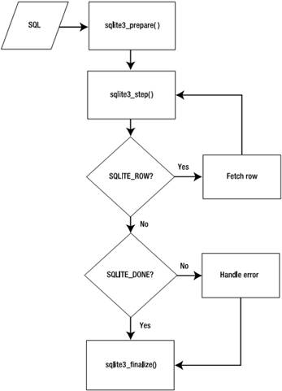
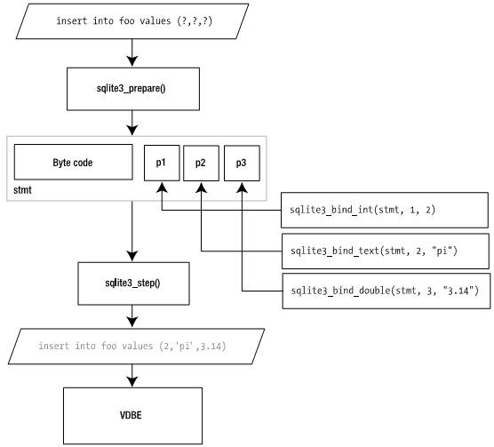
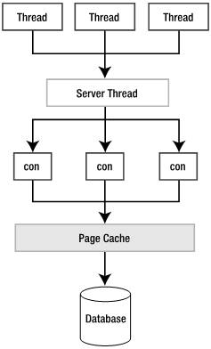

第6章 核心C API
本章介绍用于数据库操作的SQLite API。第5章已经介绍了API如何工作，本章关注细节。
本章从几个例子开始，深入介绍C API。学完本章之后，你会看到每个C API函数都与常用的数据库操作有关，包括执行命令、管理事务、取记录、处理错误等等。
SQLite的版本3的API包括大约80个函数。只有8个函数在连接、查询和断开连接时是必须的，其它的函数用来完成特定的任务。
如第5章所述，版本3与2的API相比有较大改变。最值得关注的一个改变是增加了对UTF的支持。所有接受字符串做为参数或返回字符串的函数都同时具有UTF-8和UTF-16的相似体。例如，sqlite3_open()，接受一个UTF-8的数据库名做参数；而sqlite3_open16()具有同样的功能与格式，但参数使用UTF-16编码。本章一般只介绍UTF-8的函数，UTF-16版本仅仅是在名字上有微小差别。
本章最好顺序地读，如果在细节上有问题，可以参考附录B。
空注：第6、7两章应该也是本书的精华了，主要介绍对SQLite进行编程的方法。大多数SQLite的使用者可能更关心这两章，但我又不开发基于SQLite的应用程序，研究SQLite纯粹出于兴趣，个人更关心SQLite本身的实现方法，所以对这部分内容只是略做浏览。关心这部分内容的兄弟还是得自己看原文。
封装的查询
你已经熟悉了SQLite执行查询的方法，包括在一个单独的函数中执行封装的SQL。我们从封装的SQL开始介绍，因为这些函数简单、独立且易用。它们是好的起点，使你能得到乐趣，又不会被过多的细节所困扰。
连接和断开连接
在执行SQL命令之前，首先要连接数据库。因为SQLite数据库存储在一个单独的操作系统文件当中，所以连接数据库可以理解为“打开”数据库。同样，断开连接也就是关闭数据库。
打开数据库用sqlite3_open()或sqlite3_open16()函数，它们的声明如下：
int sqlite3_open(
const char *filename, /* Database filename (UTF-8) */
sqlite3 **ppDb /* OUT: SQLite db handle */
);
int sqlite3_open16(
const void *filename, /* Database filename (UTF-16) */
sqlite3 **ppDb /* OUT: SQLite db handle */
);
其中，filename参数可以是一个操作系统文件名，或字符串':memory:'，或一个空指针(NULL)。用后两者将创建内存数据库。如果filename不为空，先尝试打开，如果文件不存在，则用这个名字创建一个新的数据库。
关闭连接使用sqlite3_close()函数，它的声明如下：
int sqlite3_close(sqlite3*);
为了sqlite3_close()能够成功执行，所有与连接所关联的已编译的查询必须被定案。如果仍然有查询没有定案，sqlite3_close()将返回SQLITE_BUSY和错误信息：Unable to close due to unfinalized statements。
执行Query
函数sqlite3_exec()提供了一种执行SQL命令的快速、简单的方法，它特别适合处理对数据库的修改操作(不需要返回数据)。sqlite3_exec()的声明如下：
int sqlite3_exec(
sqlite3*, /* An open database */
const char *sql, /* SQL to be executed */
sqlite_callback, /* Callback function */
void *data /* 1st argument to callback function */
char **errmsg /* Error msg written here */
);
SQL命令由sql参数提供，它可以由多个SQL命令构成，sqlite3_exec()会对其中每个命令进行分析并执行，直到命令串结束或遇到一个错误。列表6-1(来自create.c)说明了sqlite3_exec()的用法：
列表6-1 对简单的命令使用sqlite3_exec()
#include <stdio.h>
#include <stdlib.h>
#include "util.h"
#pragma comment(lib, "sqlite3.lib")
int main(int argc, char **argv)
{
sqlite3 *db;
char *zErr;
int rc;
char *sql;
rc = sqlite3_open("test.db", &db);
if (rc) {
fprintf(stderr, "Can't open database: %s\n", sqlite3_errmsg(db));
sqlite3_close(db);
exit(1);
}
sql = "create table episodes( id integer primary key,"
" name text, cid int)";
rc = sqlite3_exec(db, sql, NULL, NULL, &zErr);
if (rc != SQLITE_OK) {
if (zErr != NULL) {
fprintf(stderr, "SQL error: %s\n", zErr);
sqlite3_free(zErr);
}
}
sql = "insert into episodes (name,id) values ('Cinnamon Babka2',1)";
rc = sqlite3_exec(db, sql, NULL, NULL, &zErr);
if (rc != SQLITE_OK) {
if (zErr != NULL) {
fprintf(stderr, "SQL error: %s\n", zErr);
sqlite3_free(zErr);
}
}
sqlite3_close(db);
return 0;
}
处理记录
如第5章所述，还是有可能从sqlite3_exec()取得记录的。sqlite3_exec()包含一个回叫(callback)机制，提供了一种从SELECT语句得到结果的方法。这个机制由sqlite3_exec()函数的第3和第4个参数实现。第3个参数是一个指向回叫函数的指针，如果提供了回叫函数，SQLite则会在执行SELECT语句期间在遇到每一条记录时调用回叫函数。回叫函数的声明如下：
typedef int (*sqlite3_callback)(
void*, /* Data provided in the 4th argument of sqlite3_exec() */
int, /* The number of columns in row */
char**, /* An array of strings representing fields in the row */
char** /* An array of strings representing column names */
);
函数sqlite3_exec()的第4个参数是一个指向任何应用程序指定的数据的指针，这个数据是你准备提供给回叫函数使用的。SQLite将把这个数据作为回叫函数的第1个参数传递。
总之，sqlite3_exec()允许你处理一批命令，并且你可以使用回叫函数来收集所有返回的数据。例如，先向episodes表插入一条记录，再从中查询所有记录，所有这些都在一个sqlite3_exec()调用中完成。完整的程序代码见列表6-2，它来自exec.c。
列表6-2 将sqlite3_exec()用于记录处理
#include <stdio.h>
#include <stdlib.h>
#include "util.h"
#pragma comment(lib, "sqlite3.lib")
int callback(void* data, int ncols, char** values, char** headers);
int main(int argc, char **argv)
{
sqlite3 *db;
int rc;
char *sql;
char *zErr;
char* data;
rc = sqlite3_open("test.db", &db);
if(rc) {
fprintf(stderr, "Can't open database: %s\n", sqlite3_errmsg(db));
sqlite3_close(db);
exit(1);
}
data = "Callback function called";
sql = "insert into episodes (name, cid) values ('Mackinaw Peaches', 1);"
"select * from episodes;";
rc = sqlite3_exec(db, sql, callback, data, &zErr);
if(rc != SQLITE_OK) {
if (zErr != NULL) {
fprintf(stderr, "SQL error: %s\n", zErr);
sqlite3_free(zErr);
}
}
sqlite3_close(db);
return 0;
}
int callback(void* data, int ncols, char** values, char** headers)
{
int i;
fprintf(stderr, "%s: ", (const char*)data);
for(i=0; i < ncols; i++) {
fprintf(stderr, "%s=%s ", headers[i], values[i]);
}
fprintf(stderr, "\n");
return 0;
}
字符串处理
int main(int argc, char **argv)
{
char *sql;
char *trouble = "'Here's trouble'";
sql = sqlite3_mprintf("insert into x values('%q')", trouble);
fprintf(stdout, "%s\n", sql);
sqlite3_free(sql);
return 0;
}
The result sql will contain
insert into x values('''Here''s trouble''')
Listing 6-3. Using sqlite3_vmprintf()
int execute(sqlite3 *db, const char* sql, ...)
{
char *err, *tmp;
va_list ap;
va_start(ap, sql);
tmp = sqlite3_vmprintf(sql, ap);
va_end(ap);
int rc = sqlite3_exec(db, tmp, NULL, NULL, &err);
if(rc != SQLITE_OK) {
if (err != NULL) {
fprintf(stdout, "execute() : Error %i : %s\n", rc, err);
sqlite3_free(err);
}
}
sqlite3_free(tmp);
return rc;
}
Get Table查询
int sqlite3_get_table(
sqlite3*, /* An open database */
const char *sql, /* SQL to be executed */
char ***resultp, /* Result written to a char *[] that this points to */
int *nrow, /* Number of result rows written here */
int *ncolumn, /* Number of result columns written here */
char **errmsg /* Error msg written here */
);
Listing 6-4. Using sqlite3_get_table
void main(int argc, char **argv)
{
sqlite3 *db;
char *zErr;
int rc,i;
char *sql;
char **result;
int nrows, ncols;
/* Connect to database, etc. */
rc = sqlite3_open("test.db", &db);
sql = "select * from episodes;";
rc = sqlite3_get_table(db, sql, &result, &nrows, &ncols, &zErr);
/* Do something with data */
printf("rows=%d,cols=%d\n",nrows,ncols);
for (i=0;i<=nrows;i++)
printf("%-5s%-20s%-5s\n",result[3*i],result[3*i+1],result[3*i+2]);
/* Free memory */
sqlite3_free_table(result);
}
If, for example, the result set returned is of the form
rows=2,cols=3
id name cid
1 Cinnamon Babka2 (null)
2 Mackinaw Peaches 1
预处理的查询
As you’ll recall from Chapter 5, prepared queries are performed in three basic steps: compilation, execution, and finalization. This process is illustrated in Figure 6-1.

Figure 6-1. Prepared query processing
Now that you’ve seen the whole process, let’s go through an example. A simple, complete program using a prepared query is listed in Listing 6-6. It is taken from select.c in the examples.
Listing 6-6. Using Prepared Queries
#include <string.h>
int main(int argc, char **argv)
{
int rc, i, ncols;
sqlite3 *db;
sqlite3_stmt *stmt;
char *sql;
const char *tail;
rc = sqlite3_open("test.db", &db);
if(rc) {
fprintf(stderr, "Can't open database: %s\n", sqlite3_errmsg(db));
sqlite3_close(db);
exit(1);
}
sql = "select * from episodes;";
rc = sqlite3_prepare(db, sql, (int)strlen(sql), &stmt, &tail);
if(rc != SQLITE_OK) {
fprintf(stderr, "SQL error: %s\n", sqlite3_errmsg(db));
}
rc = sqlite3_step(stmt);
ncols = sqlite3_column_count(stmt);
while(rc == SQLITE_ROW) {
for(i=0; i < ncols; i++) {
fprintf(stderr, "'%s' ", sqlite3_column_text(stmt, i));
}
fprintf(stderr, "\n");
rc = sqlite3_step(stmt);
}
sqlite3_finalize(stmt);
sqlite3_close(db);
return 0;
}
跟sqlite3_exec()相似，sqlite3_prepare()也可以接受一个包括多个SQL语句的字符串。不同的是sqlite3_prepare()只处理字符串中的第1个语句。But it does make it easy for you to process subsequent SQL statements in the string by providing the pzTailout parameter. After you call sqlite3_prepare(), it will point this parameter (if provided) to the starting position of the next statement in the zSQL string. Using pzTail, processing a batch of SQL commands in a given string can be executed in a loop as follows:
while(sqlite3_complete(sql) {
rc = sqlite3_prepare(db, sql, strlen(sql), &stmt, &tail);
/* Process query results */
/* Skip to next command in string. */
sql = tail;
}
取记录
取字段信息
你可以使用sqlite3_column_name()来取得各字段的名称：
const char *sqlite3_column_name( sqlite3_stmt*, /* statement handle */
int iCol /* column ordinal */);
类似地，你可以使用sqlite3_column_type()取得各字段的存储类：
int sqlite3_column_type( sqlite3_stmt*, /* statement handle */
int iCol /* column ordinal */);
这个函数返回一个整数值，代表5个存储类的代码，定义如下：
#define SQLITE_INTEGER 1
#define SQLITE_FLOAT 2
#define SQLITE_TEXT 3
#define SQLITE_BLOB 4
#define SQLITE_NULL 5
这些是SQLite本身的类型，或称存储类，在第4章有详细介绍。All data stored within a SQLite database is stored in one of these five forms, depending on its initial representation and the affinity of the column. For our purposes, the terms storage class and data type are synonymous. For more information on storage classes, see the sections “Storage Classes” and “Type Affinity” in Chapter 4.
你可以使用sqlite3_column_decltype()函数获得字段声明的数据类型：
const char *sqlite3_column_decltype( sqlite3_stmt*, /* statement handle */
int /* column ordinal */);
如果结果集中的一列不是来自一个实际的字段(如来自于表达式、函数或聚合的结果)，这个函数将返回NULL。For example, suppose you have a table in your database defined as
CREATE TABLE t1(c1 INTEGER);
Then you execute the following query:
SELECT c1 + 1, 0 FROM t1;
In this case, sqlite3_column_decltype() will return INTEGER for the first column and NULL for
the second.
还可以用下列函数获得字段的其它信息：
const char *sqlite3_column_database_name(sqlite3_stmt *pStmt, int iCol);
const char *sqlite3_column_table_name(sqlite3_stmt *pStmt, int iCol);
const char *sqlite3_column_origin_name(sqlite3_stmt *pStmt, int iCol);
The first function will return the database associated with a column, the second its table, and
the last function returns the column’s actual name as defined in the schema. That is, if you
assigned the column an alias in the SQL statement, sqlite3_column_origin_name() will return
its actual name as defined in the schema. Note that these functions are only available if you
compile SQLite with the SQLITE_ENABLE_COLUMN_METADATA preprocessor directive.
列元数据：
字段的详细信息可以从一个独立的query获得，使用sqlite3_table_column_metadata()函数，声明如下：
SQLITE_API int sqlite3_table_column_metadata(
sqlite3 *db, /* Connection handle */
const char *zDbName, /* Database name or NULL */
const char *zTableName, /* Table name */
const char *zColumnName, /* Column name */
char const **pzDataType, /* OUTPUT: Declared data type */
char const **pzCollSeq, /* OUTPUT: Collation sequence name */
int *pNotNull, /* OUTPUT: True if NOT NULL constraint exists */
int *pPrimaryKey, /* OUTPUT: True if column part of PK */
int *pAutoinc /* OUTPUT: True if column is auto-increment */
);
这个函数包含输入和输出参数。它不在statement句柄下工作，但需要提供连接句柄、数据库名、表名和列名。可选的数据库名指明附加的逻辑数据库名(一个连接上可能附加多个数据库)。表名和字段名是必须的。
取字段值
可以使用sqlite3_column_xxx()函数取当前记录中每个字段的值，其一般形式为：
xxx sqlite3_column_xxx( sqlite3_stmt*, /* statement handle */
int iCol /* column ordinal */);
xxx表示你希望得到的数据类型。sqlite3_column_xxx()包括以下函数：
int sqlite3_column_int(sqlite3_stmt*, int iCol);
double sqlite3_column_double(sqlite3_stmt*, int iCol);
long long int sqlite3_column_int64(sqlite3_stmt*, int iCol);
const void *sqlite3_column_blob(sqlite3_stmt*, int iCol);
const unsigned char *sqlite3_column_text(sqlite3_stmt*, int iCol);
const void *sqlite3_column_text16(sqlite3_stmt*, int iCol);
对每个函数，SQLite都会将字段值从存储类转化为函数指定的结果类型。Table 6-1中是转换规则。
Table 6-1. Column Type Conversion Rules
Internal Type Requested Type Conversion
NULL INTEGER Result is 0\.
NULL FLOAT Result is 0.0\.
NULL TEXT Result is a NULL pointer.
一个实际的例子
To help solidify all of these column functions, Listing 6-7 (taken from columns.c) illustrates using the functions we’ve described to retrieve column information and values for a simple SELECT statement.
Listing 6-7. Obtaining Column Information
#include <string.h>
int main(int argc, char **argv)
{
int rc, i, ncols, id, cid;
char *name, *sql;
sqlite3 *db; sqlite3_stmt *stmt;
sql = "select id,cid,name from episodes";
sqlite3_open("test.db", &db);
sqlite3_prepare(db, sql, strlen(sql), &stmt, NULL);
ncols = sqlite3_column_count(stmt);
rc = sqlite3_step(stmt);
/* Print column information */
for(i=0; i < ncols; i++) {
fprintf(stdout, "Column: name=%s, storage class=%i, declared=%s\n",
sqlite3_column_name(stmt, i),
sqlite3_column_type(stmt, i),
sqlite3_column_decltype(stmt, i));
}
fprintf(stdout, "\n");
while(rc == SQLITE_ROW) {
id = sqlite3_column_int(stmt, 0);
cid = sqlite3_column_int(stmt, 1);
name = (char *)sqlite3_column_text(stmt, 2);
if(name != NULL){
fprintf(stderr, "Row: id=%i, cid=%i, name='%s'\n", id,cid,name);
} else {
/* Field is NULL */
fprintf(stderr, "Row: id=%i, cid=%i, name=NULL\n", id,cid);
}
rc = sqlite3_step(stmt);
}
sqlite3_finalize(stmt);
sqlite3_close(db);
return 0;
}
参数化的查询

Figure 6-2. SQL parameter binding
错误和意外
有些API是很可能出错的，在编码时总要记得3件事：错误、忙状态和schema改变。
处理错误
很多API函数返回整数结果码，这表示它们可以返回错误码。在使用一个函数之前，应该仔细阅读关于该函数的说明(见附录B)，看它可能引发什么错误。API中定义了大约23种错误。所有的SQLite返回码见表6-2。所有能够返回这些码的函数包括：
sqlite3_bind_xxx()
sqlite3_close()
sqlite3_create_collation()
sqlite3_collation_needed()
sqlite3_create_function()
sqlite3_prepare()
sqlite3_exec()
sqlite3_finalize()
sqlite3_get_table()
sqlite3_open()
sqlite3_reset()
sqlite3_step()
sqlite3_transfer_bindings()
可以使用函数sqlite3_errmsg()获得附加的错误信息，其声明如下：
const char *sqlite3_errmsg(sqlite3 *);
它以一个连接句柄作参数，返回该连接最近的一条错误信息。如果还没有发生错误，它返回“not an error”。
表6-2 SQLit的返回码
| 返回码 | 说明 |
|---|---|
| SQLITE_OK | The operation was successful. |
| SQLITE_ERROR | General SQL error or missing database. It may be possible to obtain more error information depending on the error condition (SQLITE_SCHEMA, for example). |
| SQLITE_PERM | Access permission denied. Cannot read or write to the database file. |
| SQLITE_ABORT | A callback routine requested an abort. |
| SQLITE_BUSY | The database file is locked. |
| SQLITE_LOCKED | A table in the database is locked. |
| SQLITE_NOMEM | A call to malloc() has failed within a database operation. |
| SQLITE_READONLY | An attempt was made to write to a read-only database. |
| SQLITE_INTERRUPT | Operation was terminated by sqlite3_interrupt(). |
| SQLITE_IOERR | Some kind of disk I/O error occurred. |
| SQLITE_CORRUPT | The database disk image is malformed. This will also occur if an attempt is made to open a non-SQLite database file as a SQLite database. SQLITE_FULL Insertion failed because the database is full. There is no more space on the file system or the database file cannot be expanded. |
| SQLITE_CANTOPEN | SQLite was unable to open the database file. |
| SQLITE_PROTOCOL | The database is locked or there has been a protocol error. |
| SQLITE_EMPTY | (Internal only) The database table is empty. |
| SQLITE_SCHEMA | The database schema has changed. |
| SQLITE_CONSTRAINT | Abort due to constraint violation. This constant is returned if the SQL statement would have violated a database constraint (such as attempting to insert a value into a unique index that already exists in the index). |
| SQLITE_MISMATCH | Data type mismatch. An example of this is an attempt to insert non-integer data into a column labeled INTEGER PRIMARY KEY. For mostcolumns, SQLite ignores the data type and allows any kind of data to be stored. But an INTEGER PRIMARY KEY column is only allowed to store integer data. |
| SQLITE_MISUSE | Library was used incorrectly. This error might occur if one or more of the SQLite API routines is used incorrectly. Examples of incorrect usage include calling sqlite3_exec() after the database has been closed using sqlite3_close() or calling sqlite3_exec() with the same database pointer simultaneously from two separate threads. |
| SQLITE_NOLFS | Uses OS features not supported on host. This value is returned if the SQLite library was compiled with large file support (LFS) enabled butLFS isn’t supported on the host operating system. |
| SQLITE_AUTH | Authorization denied. This occurs when a callback function installed using sqlite3_set_authorizer() returns SQLITE_DENY. |
| SQLITE_ROW | sqlite3_step() has another row ready. |
| SQLITE_DONE | sqlite3_step() has finished executing. |
处理忙状态
操作控制
API提供了几个函数，可以用来监视或管理编译期间和运行时的SQL命令。这些函数允许你建立回叫函数，并以此对不同的数据库事件进行监视和控制(当事件发生时)。
提交Hook函数
使用sqlite3_commit_hook()函数可以在特定连接提交事务时对其进行监视。其声明如下：
void *sqlite3_commit_hook( sqlite3 *cnx, /* database handle */
int(*xCallback)(void *data), /* callback function */
void *data); /* application data */
回卷Hook函数
回卷Hook函数与提交Hook函数相类似，但它在特定连接回卷事务时对其进行监视。
void *sqlite3_rollback_hook(sqlite3 *cnx, void(*xCallback)(void *data), void *data);
修改Hook函数
函数sqlite3_update_hook()用来监视特定数据库连接所有的UPDATE、INSERT和DELETE操作，对这些操作中所涉及的每一行都进行监视，其声明如下：
void *sqlite3_update_hook(
sqlite3 *cnx,
void(*)(void *, int, char const*, char const*, sqlite_int64),
void *data);
The first argument of the callback function is a pointer to application-specific data, which you provide in the third argument. The callback function has the following form:
void callback ( void * data,
int operation_code,
char const *db_name,
char const *table_name,
sqlite_int64 rowid),
授权函数
sqlite3_set_authorizer()是最强有力的事件过滤函数。用它可以在查询编译的时候对其进行监视和控制。其声明如下：
int sqlite3_set_authorizer(
sqlite3*,
int (*xAuth)( void*,int,
const char*, const char*,
const char*,const char*),
void *pUserData
);
其中注册了一个callback函数，作为授权函数。SQLite在一些数据库事件的命令编译阶段将会调用它(不是在执行阶段)。这个函数的用意是使用SQLite能够安全地执行用户提供的SQL(user-supplied SQL)。它提供了一种途径将这类SQL限制在特定的操作上或拒绝对某些表或字段的存取。
Callback的声明形式如下：
int auth( void*, /* user data */
int, /* event code */
const char*, /* event specific */
const char*, /* event specific */
const char*, /* database name */
const char* /* trigger or view name */ );
第1个参数是一个数据指针，它会传递给sqlite3_set_authorizer()函数的第4个参数。第2个参数是一个常量，可选值在表6-3中列出。这些常量值表示需要授权的是什么操作。第3、4个函数的含义决定于事件代码(第2个参数，参表6-3)。
第5个参数是数据库名。第6个参数是最内层触发器或视图的名称，就是这个触发器或视图企图存取数据库。如果这个参数为NULL，则说明这种存取的企图是直接由顶层的SQL引发的。
授权函数的返回值应该是SQLITE_OK、SQLITE_DENY或SQLITE_IGNORE之一。前两个值的含义对所有事件都是确定的——接受或拒绝SQL。SQLITE_DENY将会取消整个SQL语句的执行并生成一个错误。
SQLITE_IGNORE的含义与事件有关。如果SQL语句是读或改记录，会在语句试图操作的每个字段上产生SQLITE_READ或SQLITE_UPDATE事件。在这种情况下，如果回叫函数返回SQLITE_IGNORE，这些字段将从操作中被排除(高：别的字段继续操作，这些字段就不操作了)。具体说，试图读的返回NULL，试图写的则什么也不做(silently fail)。
表6-3 SQLite的授权事件
| 事件代码 | 参数3 | 参数4 |
|---|---|---|
| SQLITE_CREATE_INDEX | Index name | Table name |
| SQLITE_CREATE_TABLE | Table name | NULL |
| SQLITE_CREATE_TEMP_INDEX | Index name | Table name |
| SQLITE_CREATE_TEMP_TABLE | Table name | NULL |
| SQLITE_CREATE_TEMP_TRIGGER | Trigger name | Table name |
| SQLITE_CREATE_TEMP_VIEW | View name | NULL |
| SQLITE_CREATE_TRIGGER | Trigger name | Table name |
| SQLITE_CREATE_VIEW | View name | NULL |
| SQLITE_DELETE | Table name | NULL |
| SQLITE_DROP_INDEX | Index name | Table name |
| SQLITE_DROP_TABLE | Table name | NULL |
| SQLITE_DROP_TEMP_INDEX | Index name | Table name |
| SQLITE_DROP_TEMP_TABLE | Table name | NULL |
| SQLITE_DROP_TEMP_TRIGGER | Trigger name | Table name |
| SQLITE_DROP_TEMP_VIEW | View name | NULL |
| SQLITE_DROP_TRIGGER | Trigger name | Table name |
| SQLITE_DROP_VIEW | View name | NULL |
| SQLITE_INSERT | Table name | NULL |
| SQLITE_PRAGMA | Pragma name | First argument or NULL |
| SQLITE_READ | Table name | Column name |
| SQLITE_SELECT | NULL | NULL |
| SQLITE_TRANSACTION | NULL | NULL |
| SQLITE_UPDATE | Table name | Column name |
| SQLITE_ATTACH | Filename | NULL |
| SQLITE_DETACH | Database name | NULL |
下面例子说明授权函数的使用(完整的程序在authorizer.c中)。
这是一个很长的例子，会用授权函数对很多不同的数据库事件进行过滤，所以我们通过程序片段来进行说明。见列表6-10。
列表6-10 授权函数示例
授权函数的一般形式为：
int auth( void* x, int type,
const char* a, const char* b,
const char* c, const char* d )
{
const char* operation = a;
//printf( " %s ", event_description(type));
/* Filter for different database events
** from SQLITE_TRANSACTION to SQLITE_INSERT,
** UPDATE, DELETE, ATTACH, etc. and either allow or deny
** them.
*/
return SQLITE_OK;
}
授权函数做的第1件事是：看看事务状态是否改变；如果改变，则输出一个信息：
if((a != NULL) && (type == SQLITE_TRANSACTION)) {
printf(": %s êÂÎñ", operation);
}
下一步是对引起schema改变的事件进行过滤：
switch(type) {
case SQLITE_CREATE_INDEX:
case SQLITE_CREATE_TABLE:
case SQLITE_CREATE_TRIGGER:
case SQLITE_CREATE_VIEW:
case SQLITE_DROP_INDEX:
case SQLITE_DROP_TABLE:
case SQLITE_DROP_TRIGGER:
case SQLITE_DROP_VIEW:
{
printf(": Schema¸Ä±äáË¡￡");
}
}
下一步是对读的企图进行检查，这种企图是基于字段的。这里，所有的读都被允许，除了z字段。当要读z字段时，函数返回SQLITE_IGNORE，这将导致SQLite在读这个字段时返回NULL，从而有效地保护其数据。
if(type == SQLITE_READ) {
printf(": Read of %s.%s ", a, b);
/* Block attempts to read column z */
if(strcmp(b,"z")==0) {
printf("-> DENIED\n");
return SQLITE_IGNORE;
}
}
下面是INSERT和UPDATE的过滤。所有的插入被允许。对x字段的修改被拒绝。这样不会锁住UPDATE的执行，而是简单地过滤掉对x字段的修改企图。
if(type == SQLITE_INSERT) {
printf(": 2åèë¼Ç¼ into %s ", a);
}
if(type == SQLITE_UPDATE) {
printf(": Update of %s.%s ", a, b);
/* Block updates of column x */
if(strcmp(b,"x")==0) {
printf("-> DENIED\n");
return SQLITE_IGNORE;
}
}
最后，对DELETE、ATTACH和DETACH进行过滤，在遇到这些事件时只是简单地给出通知。
if(type == SQLITE_DELETE) {
printf(": Delete from %s ", a);
}
if(type == SQLITE_ATTACH) {
printf(": %s", a);
}
if(type == SQLITE_DETACH) {
printf("-> %s", a);
}
下面是主程序，为了介绍的方便，也会分成多个片段。
int main(int argc, char **argv)
{
sqlite3 *db, *db2;
char *zErr;
int rc;
/* -------------------------------------------------------------------------
** Setup
** -------------------------------------------------------------------------
*/
/* Connect to test.db */
rc = sqlite3_open("test.db", &db);
if(rc) {
fprintf(stderr, "Can't open database: %s\n", sqlite3_errmsg(db));
sqlite3_close(db);
exit(1);
}
/* -------------------------------------------------------------------------
** Authorize and test
** -------------------------------------------------------------------------
*/
/* Register the authorizer function */
sqlite3_set_authorizer(db, auth, NULL);
/* Test transactions events */
printf("program : Starting transaction\n");
sqlite3_exec(db, "BEGIN", NULL, NULL, &zErr);
printf("program : Committing transaction\n");
sqlite3_exec(db, "COMMIT", NULL, NULL, &zErr);
printf("program : Starting transaction\n");
sqlite3_exec(db, "BEGIN", NULL, NULL, &zErr);
printf("program : Aborting transaction\n");
sqlite3_exec(db, "ROLLBACK", NULL, NULL, &zErr);
// Test table events
printf("program : Creating table\n");
sqlite3_exec(db, "create table foo(x int, y int, z int)", NULL, NULL, &zErr);
printf("program : Inserting record\n");
sqlite3_exec(db, "insert into foo values (1,2,3)", NULL, NULL, &zErr);
printf("program : Selecting record (value for z should be NULL)\n");
print_sql_result(db, "select * from foo");
printf("program : Updating record (update of x should be denied)\n");
sqlite3_exec(db, "update foo set x=4, y=5, z=6", NULL, NULL, &zErr);
printf("program : Selecting record (notice x was not updated)\n");
print_sql_result(db, "select * from foo");
printf("program : Deleting record\n");
sqlite3_exec(db, "delete from foo", NULL, NULL, &zErr);
printf("program : Dropping table\n");
sqlite3_exec(db, "drop table foo", NULL, NULL, &zErr);
Several things are going on here. The program selects all records in the table, one of which is
column z. We should see in the output that column z’s value is NULL. All other fields should
contain data from the table. Next, the program attempts to update all fields, the most important
of which is column x. The update should succeed, but the value in column x should be
unchanged, as the authorizer denies it. This is confirmed on the following SELECT statement,
which shows that all columns were updated except for column x, which is unchanged. The
program then drops the foo table, which should issue a schema change notification from the
previous filter.
// Test ATTACH/DETACH
// Connect to test2.db
rc = sqlite3_open("test2.db", &db2);
if(rc) {
fprintf(stderr, "Can't open database: %s\n", sqlite3_errmsg(db2));
sqlite3_close(db2);
exit(1);
}
// Drop table foo2 in test2 if exists
sqlite3_exec(db2, "drop table foo2", NULL, NULL, &zErr);
sqlite3_exec(db2, "create table foo2(x int, y int, z int)", NULL, NULL, &zErr);
// Attach database test2.db to test.db
printf("program : Attaching database test2.db\n");
sqlite3_exec(db, "attach 'test2.db' as test2", NULL, NULL, &zErr);
// Select record from test2.db foo2 in test.db
printf("program : Selecting record from attached database test2.db\n");
sqlite3_exec(db, "select * from foo2", NULL, NULL, &zErr);
printf("program : Detaching table\n");
sqlite3_exec(db, "detach test2", NULL, NULL, &zErr);
/* -------------------------------------------------------------------------
** Cleanup
** -------------------------------------------------------------------------
*/
sqlite3_close(db);
sqlite3_close(db2);
return 0;
}
线程
如第2章所述，SQLite支持线程。在多线程环境下使用SQLite时，有一些基本规则需要遵守。
共享缓冲区模式

Figure 6-3. The shared cache model
共享缓冲区模式的目录是为了节省内在，SQLite中有几个函数是与线程和内存管理有关的。使用它们可以限制堆的尺寸或手工地发起内存清理。这些函数包括：
void sqlite3_soft_heap_limit(int N);
int sqlite3_release_memory(int N);
void sqlite3_thread_cleanup(void);